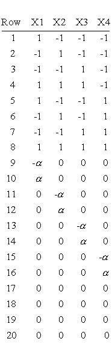
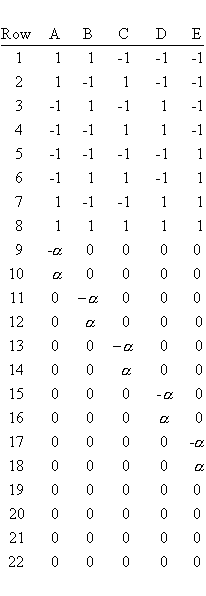
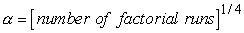

|
5.
Process Improvement
5.5. Advanced topics
|
|||
| Small composite
designs save runs compared to Resolution V response surface designs by
adding star points to a Resolution III design
Designs for 4 and 5 factors
|
Response surface designs (RSD)
were described earlier.
A typical RSD requires about 13 runs for 2 factors, 20 runs for 3 factors,
31 runs for 4 factors, and 32 runs for 5 factors. It is obvious that,
once you have four or more factors you wish to include in a RSD, you will
need more than one lot of experimental units for your basic design.
This is what most statistical software today will give you, including RS/1,
JMP, and SAS. However, there is a way to cut down on the number of
runs, as suggested by H.O Hartley in his paper 'Smallest Composite
Designs for Quadratic Response Surfaces' published in Biometrics,
December 1959
This method addresses the theory that using a Resolution V design as the smallest fractional design to create an RSD is unnecessary. This method adds star points to designs of Resolution III, and then uses the star points to help estimate the two-factor interactions. This method will not estimate three-factor interactions or higher. This could be particularly useful when you have a design containing four or five factors, which you wish to only use the experimental units from one lot. The following are the designs for four and five factors. You would want to randomize these runs before implementing them. -1 and +1 represent the low and high settings of each factor. TABLE 5.11 Four factors: Factorial design section is
based on a generator of I=ABC, Resolution III. -a
and +a are the star points, calculated beyond
the factorial range. 0 represents the midpoint of the factor range.
 TABLE 5.12 Five factors: Factorial design section is
based on a generator of I=ADE=BCE=ABCD, Resolution III. -a
and +a are the star points, calculated
beyond the factorial range. 0 represents the midpoint of the factor
range
 Determining a in Central Composite Designs To maintain rotatability, the value of a depends on the number of factors intended for the factorial portion of the central composite design.  |
||